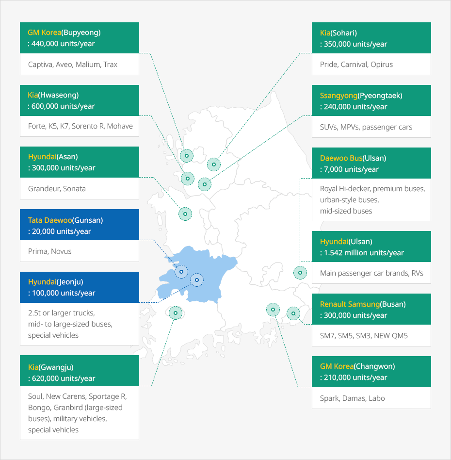
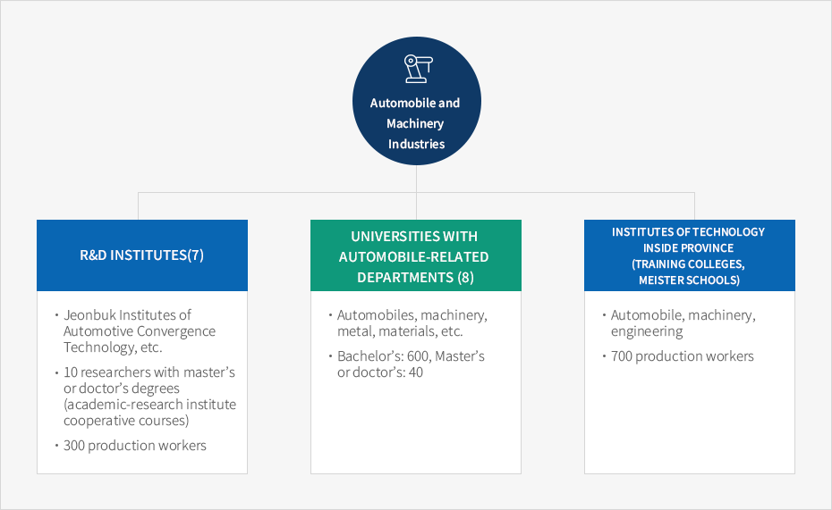

Automotive and Machinery Industry
- Home
- Business Opportunities
- Automotive and Machinery Industries
North Jeolla Province has 13 companies that produces 4.70 million completed vehicles in areas just three hours away


- GM Korea (Bupyeong): 440,000 units/year : Captiva, Aveo, Malium, Trax
- Kia (Hwaseong): 600,000 units/year : Forte, K5, K7, Sorento R, Mohave
- Hyundai (Asan): 300,000 units/year : Grandeur, Sonatas
- Tata Daewoo (Gunsan): 20,000 units/year : Prima, Novus
- Hyundai (Jeonju): 100,000 units/year : 2.5t or larger trucks, mid- to large-sized buses, special vehicles
- Kia (Gwangju): 620,000 units/year : Soul, New Carens, Sportage R, Bongo, Granbird (large-sized buses), military vehicles, special vehicles
- Kia (Sohari): 350,000 units/year : Pride, Carnival, Opirus
- Ssangyong (Pyeongtaek): 240,000 units/year : SUVs, MPVs, passenger cars
- Daewoo Bus (Ulsan): 7,000 units/year : Royal Hi-decker, premium buses, urban-style buses, mid-sized buses
- Hyundai (Ulsan): 1.542 million units/year : Main passenger car brands, RVs
- Renault Samsung (Busan): 300,000 units/year : SM7, SM5, SM3, New QM5
- GM Korea (Changwon): 210,000 units/year : Spark, Damas, Labo

The province is home to Korea's best automobile·excavator·tracktor manufacterers
| Name | Product | Production Capacity | Location |
|---|---|---|---|
| GM Korea Gunsan | Automobiles(Cruise, Orlando) | 280,000 completed vehicles, 540,000 KD | Gunsan |
| Hyundai Motors Jeonju | Trucks, buses, special vehicles | 70,000 | Wanju |
| Tata Daewoo Commercial Vehicle Company Limited | Trucks | 20,000 | Gunsan |
| Doosan Infracore Gunsan | Excavators, wheel loaders | 4,000 | Gunsan |
| LS Mtron Jeonju | Tracktors | 20,000 | Wanju |
| Tongyang Moolsan Co., LTD. | Tracktors, rice-planting machines, combines | 20,000 | Iksan |
R&D institutes specializing in automotive and machinery industries support businesses
| Name | Field of support | Location |
|---|---|---|
| Jeonbuk Institute of Automotive Convergence Technology |
R&D, process improvement, manpower training (Equipped with 130 devices incl. power performance evaluation equipment) | Gunsan |
| Korea Electronics Technology Institute Jeonbuk headquarters | Automotive electronics reliability evaluation, manpower training ※ (Equipped with 20 devices incl. electromagnetic compatibility measuring equipment) |
Jeonju Wanju |
| Korea Institute of Carbon Convergence Technology | Carbon material technology development, manpower training ※ (Equipped with 134 devices incl. composite material nondestructive test equipment) |
Jeonju |
| KIST Jeonbuk branch Composite Materials Lab | Composite material technology research | Wanju |
| Chonbuk Nat'l Univ Center for automotive components and mold quality improvement | University-industry joint research, technology transfer, manpower training | Jeonju |
| Kunsan Nat'l Univ Center for automotive components technology development | University-industry joint research, technology transfer, manpower training | Gunsan |
| Jeonbuk Embedded System Research Center | Development of automotive SOC | Wanju |
R&D institutes specializing in automotive and machinery industries support human resources

Automobile and Machinery Industries
- R&D Institutes(7)
- Jeonbuk Institutes of Automotive Convergence Technology, etc.
- 10 researchers with master’s or doctor’s degrees (academic-research institute cooperative courses)
- 300 production workers
- Universities with Automobile-Related Departments (8)
- Automobiles, machinery, metal, materials, etc.
- Bachelor’s: 600, Master’s or doctor’s: 40
- Institutes of technology inside province (training colleges, meister schools)
- Automobile, machinery, engineering
- 700 production workers